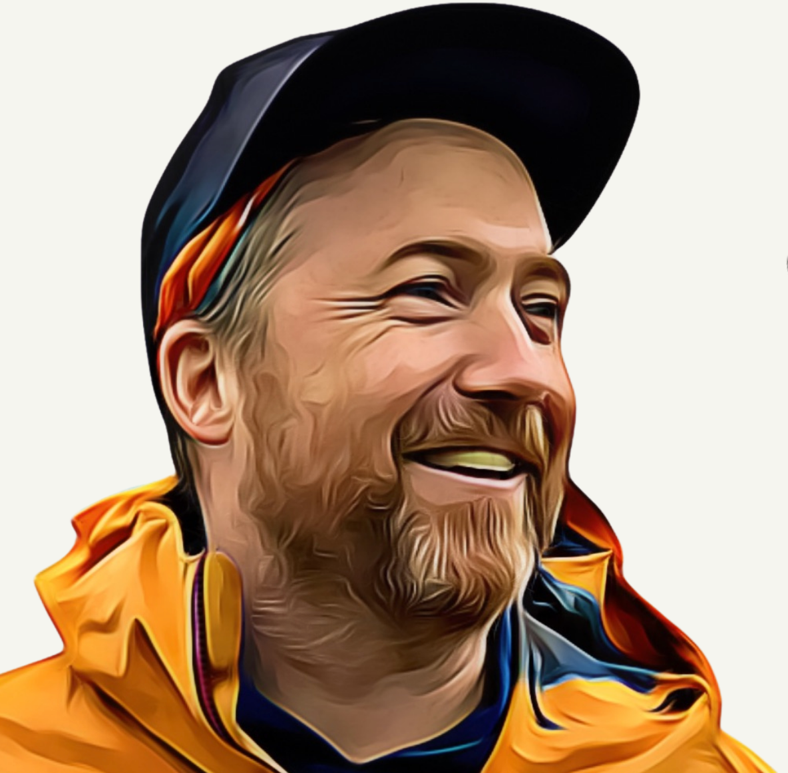

Kevin Walsh could brighten up any room (including Zoom rooms) with his warm smile and bright eyes. For over 15 years, Kev contributed to CivicActions’ clients and colleagues through a variety of roles, making a lasting impact at every step. Sadly, his life was cut short in a tragic accident earlier this summer.

Over the past weeks, our team and extended colleagues have been sharing memories and stories about Kev. There has been a common thread reflected throughout, which is how much he cared and trusted in those around him. Kev was a wonderful work partner, who not only made the world a better place, but also helped each of us become better people.
Kev will be best remembered for his hunger for learning and constantly evolving his skills to create meaningful impact. Over the course of his career, he worked as an engineer before transitioning into a UX designer, in turn initiating the UX and Content practice at CivicActions. Kev eventually found his home in Product Management, serving in a significant leadership role on the Veterans Affairs project, where he led with openness, experience, and empathy.
The loss of Kev and the impact he had on the CivicActions team has been astounding. As we reflect on what it means to move forward, we want to ensure we are intentionally preserving the characteristics that Kev brought to this team. In recognition of his spirit, CivicActions will be introducing a new Impact Award in honor of Kevin Walsh.
This annual Impact Award will be presented to a CivicActions team member, partner, or client each year. This year a donation will go to the Kolapore Wilderness Trails Association, where Kev spent time and resources on the trails, and is another place where his absence will be deeply felt.
Kev also leaves behind many who loved him. His partner Lisa, and their two daughters, Léa and Polly, were central to his passion for life. He prioritized traveling to France regularly to visit family, and he often spent time with his mom, Valerie, in Toronto.
Friends have organized a Memorial Fund to help make the path ahead a little easier for Kev’s family. There is also a t-shirt honoring Kev and his role in bike polo with 100% of the proceeds from the sales of the shirts going to Kev’s family.
As we find our footing in a future without Kev, we can find solace in knowing that his memory lives on in our hearts. We can be more like Kev by living life with intention. We can hold each other up, believe in each other, and believe in ourselves.
Kev is deeply loved and missed, and we are grateful that his memory will forever remain part of our lives.